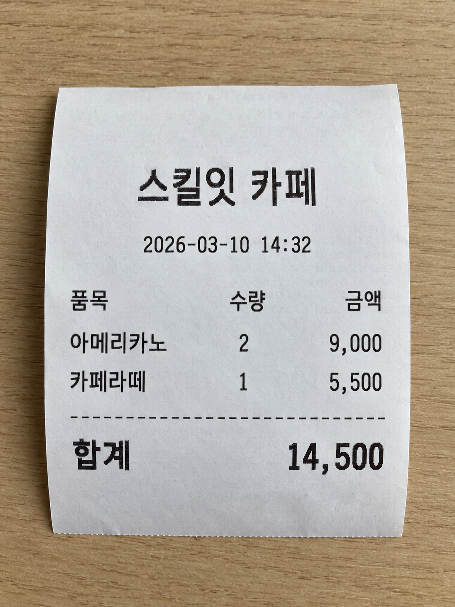

Lab 15 — Content Understanding 으로 영수증 추출
이 실습에서 하는 것
영수증 이미지에서 총 금액 · 날짜 · 상호를 각각의 필드 값으로 뽑습니다. 글자를 읽는 게 아니라, 쓸 수 있는 데이터로 만드는 겁니다.
선행 Lab 13 완료 · 예상 시간 40분 · 비용 약 $0.1 미만
0. OCR 과 무엇이 다른가 (5분)
★★ 5강에서 배운 구분이 여기서 실물이 됩니다
| OCR | Content Understanding | |
|---|---|---|
| 결과 | 글자 뭉치 | 이름 붙은 필드 값 |
| 예 | "합계 23,000원 2026-03-10" |
{"총금액": 23000, "날짜": "2026-03-10"} |
| 다음 단계 | 직접 파싱해야 함 | 바로 시스템에 넣을 수 있음 |
"필드로 받는다" 가 나오면 Content Understanding 입니다. "글자를 읽는다"면 OCR입니다. 시험에 이 짝으로 나옵니다.
Lab 13(멀티모달)과도 다릅니다. 멀티모달 모델도 영수증을 읽고 설명할 수 있지만, 매번 같은 형식으로 돌려준다는 보장이 없습니다. CU는 스키마를 미리 정해서 형식을 고정합니다.
1. 준비 — 될 조건부터 확인 (3분)
이 랩은 앞선 랩들보다 조건이 까다롭습니다
아래 네 가지가 모두 맞아야 분석기가 돕니다. 시작 전에 확인하세요.
| 조건 | 확인 방법 | 안 되면 | |
|---|---|---|---|
| 1 | Foundry 리소스가 있어야 함 | Lab 01에서 만든 그것 | Lab 01로 돌아가기 |
| 2 | 리전이 Content Understanding 을 지원해야 함 | Studio 설정에서 리소스가 붙는지로 판단 | 강사 화면으로 대체 |
| 3 | 내 계정에 Cognitive Services User 역할 |
강사가 미리 부여 | 손 들기 |
| 4 | 패키지 (코드까지 볼 경우) | 아래 참조 | — |
★ 역할이 왜 따로 필요한가 — 시험에도 이어집니다
Lab 02~07 은 API 키로 호출했습니다. 키 인증은 역할(RBAC)을 거치지 않습니다. 그런데 Content Understanding 과 에이전트는 데이터 평면(data plane) 작업이라 역할이 있어야 합니다.
| 역할 | 담당 | 이걸로 되는 것 |
|---|---|---|
Contributor |
제어 평면 — 리소스·배포를 만들고 지움 | Lab 01 · 02 |
Cognitive Services User |
데이터 평면 — 추론·추출·에이전트 | Lab 08 · 09 · 15 |
Contributor 만 있으면 리소스는 만들어지는데 분석은 거부됩니다.
"만들 수는 있는데 쓸 수가 없다"가 이 구분의 증상입니다.
패키지 (4절에서 코드를 볼 경우)
오늘 실행하지는 않습니다
4절에서 구조만 봅니다. 설치는 선택입니다 — 집에서 이어서 해보려면 이 버전으로 맞추세요.
2. 영수증 이미지 (3분)
아래 영수증을 내려받아 쓰세요. 파일명은 receipt.png 그대로 두시면 됩니다.


담긴 내용은 이렇습니다. 3절에서 이 값들이 필드로 나오는지 확인하게 됩니다.
실물 영수증으로 해보고 싶다면
지갑에 있는 영수증을 써도 됩니다. 구겨지지 않게 펴고, 그림자가 지지 않게 위에서 찍으세요. 감열지는 시간이 지나면 흐려져서 최근 영수증이 잘 읽힙니다.
3. 분석기(Analyzer) 만들기 (15분)
여기가 핵심입니다. 무엇을 뽑을지 미리 정의합니다.
주의 — Foundry 포털에서는 못 만듭니다
사용자 지정 분석기는 Content Understanding Studio 에서만 만들 수 있습니다. Foundry(신규) 포털에도 Content Understanding 플레이그라운드가 있지만, 거기서는 미리 만들어진 분석기를 써보는 것만 되고 사용자 지정 분석기 생성은 지원하지 않습니다. Foundry(클래식) 경험은 2026년 7월 15일 사용 중지됐습니다.
3-1. Studio 접속과 리소스 연결
- contentunderstanding.ai.azure.com 에 접속해 로그인합니다
- 처음이라면 설정 페이지 로 가서 왼쪽 위 + Add resource
- Lab 01에서 만든 Foundry 리소스를 고르고 Next → Save
체크박스 하나를 꼭 확인하세요
Enable autodeployment for required models if no defaults are available 가 켜져 있어야 합니다. 분석기마다 필요한 모델이 다른데, 이걸 켜두면 Studio가 알아서 배포해 줍니다. 꺼두면 분석할 때 모델이 없다며 실패합니다.
3-2. 프로젝트 만들기
- 홈에서 Create project
- 프로젝트 유형은 Extract content and fields with a custom schema 를 고릅니다
- 이름을 적고 Create
receipt.png를 업로드합니다 → Studio가 파일을 분류하고 템플릿을 추천해 줍니다- 추천 중 영수증에 맞는 템플릿을 고릅니다
3-3. 필드 스키마 정의
템플릿에 딸려온 필드를 확인하고, 필요한 것만 남기거나 직접 추가합니다.
| 필드 이름 | 유형 | 설명 |
|---|---|---|
상호 |
문자열 | 가게 이름 |
날짜 |
날짜 | 결제 일자 |
총금액 |
숫자 | 합계 금액 |
설명을 구체적으로 쓰세요
총금액 에 "합계, 총액, Total 로 표시된 최종 결제 금액" 처럼 적으면 정확도가 올라갑니다.
이게 프롬프트 역할을 합니다.
- 다 고쳤으면 Save
3-4. 테스트
- Run analysis 를 눌러 결과를 봅니다
- 결과가 필드별로 나오는지 확인합니다
이게 핵심입니다
OCR이었다면 "스킬잇 카페 2026-03-10 14:32 아메리카노 2 9,000..." 한 덩어리였을 겁니다.
이름이 붙은 값으로 나왔다는 게 차이입니다.
3-5. 분석기 빌드
결과가 마음에 들면 실제로 쓸 수 있는 분석기로 굽습니다.
- 페이지 위쪽 Build analyzer → 이름을 적고 Build
- 다 되면 Jump to analyzer list → 방금 만든 분석기를 선택합니다
- 키와 엔드포인트가 들어간 코드 샘플이 보입니다 — 5절에서 볼 구조가 이겁니다
4. 분석기 두 종류 (5분)
| 미리 만들어진(prebuilt) 분석기 | 사용자 지정 분석기 | |
|---|---|---|
| 준비 | 바로 씀 | 스키마를 직접 정의 ← 방금 한 것 |
| 대상 | 영수증·명함 등 일반 문서 | 우리 회사 양식 |
| 장점 | 빠름 | 원하는 필드만 정확히 |
★ 시험 포인트
"사내 전용 양식에서 특정 필드를 뽑아야 한다" → 사용자 지정 분석기 "일반적인 영수증을 처리한다" → 미리 만들어진 분석기로 충분
5. 코드에서 부르는 구조 (10분)
오늘은 코드를 실행하지 않습니다
시간 때문에 구조만 봅니다. 시험이 묻는 것도 "흐름"이지 정확한 메서드명이 아닙니다.
아래 코드는 azure-ai-contentunderstanding==1.1.0 에서 실제로 돌려 확인한 것입니다.
집에서 이어서 해보려면 그대로 쓰시면 됩니다. 다른 버전은 메서드 이름이 다를 수 있습니다.
endpoint URL은 어디서 복사하나요?
- Azure Portal에서 Content Understanding에 연결한 Foundry 리소스를 엽니다. 프로젝트가 아니라 부모 리소스입니다.
- 왼쪽 메뉴의 리소스 관리(Resource Management) → 키 및 엔드포인트(Keys and Endpoint) 를 엽니다.
- 엔드포인트(Endpoint) 값을 복사합니다. 아래 주소는 형식 예시이므로 자신의 리소스 값을 그대로 쓰세요.
리소스에 따라 https://<내-리소스-이름>.cognitiveservices.azure.com/ 형태가 표시될 수도 있습니다. 도메인을 임의로 바꾸지 말고 포털에 표시된 실제 값을 사용합니다.
주소 세 가지를 구분하세요
https://contentunderstanding.ai.azure.com/는 Studio 웹사이트 주소입니다. 코드의 endpoint가 아닙니다./api/projects/<프로젝트명>이 포함된 프로젝트 엔드포인트도 이 클라이언트에 넣지 않습니다.- 이 코드에는 리소스 엔드포인트를 넣습니다.
/contentunderstanding/...나?api-version=...경로를 직접 덧붙이지 않습니다.
★★ .env 의 PROJECT_ENDPOINT 를 쓰면 401 이 납니다
.env 에 이미 들어 있는 주소라서 그걸 집기 쉬운데, 그게 함정입니다.
그러면 이 메시지가 나옵니다.
azure.core.exceptions.ClientAuthenticationError: (None) Unauthorized.
Access token is missing, invalid, audience is incorrect
(https://ai.azure.com), or have expired.
"역할이 없다"는 뜻이 아닙니다. 주소와 토큰의 종류가 어긋난 겁니다.
| 원하는 토큰 청중(audience) | |
|---|---|
.../api/projects/<프로젝트> |
https://ai.azure.com ← Foundry 프로젝트 |
.../ (리소스) |
https://cognitiveservices.azure.com ← CU SDK 가 보내는 것 |
CU SDK 는 항상 cognitiveservices 청중으로 토큰을 받아옵니다. 그래서
프로젝트 주소에 보내면 거절됩니다. 변수를 따로 만드세요.
복사한 주소를 .env 의 CU_ENDPOINT 에 넣고 시작합니다. 기존 PROJECT_ENDPOINT 를 고치지 말고 줄을 새로 추가하세요 — Lab 09 가 그 값을 씁니다.
receipt-analyzer 도 예시 ID이므로 3-5 에서 빌드한 분석기 ID와 글자 그대로 맞춰야 합니다. 이 코드는 Entra ID 인증을 쓰므로 키를 붙여 넣는 대신 실행 신원과 필요한 역할을 준비합니다.
import os
from dotenv import load_dotenv
from azure.ai.contentunderstanding import ContentUnderstandingClient
from azure.identity import DefaultAzureCredential
load_dotenv()
# 1. 리소스 엔드포인트로 클라이언트 생성 — PROJECT_ENDPOINT 가 아닙니다
client = ContentUnderstandingClient(
endpoint=os.getenv("CU_ENDPOINT"),
credential=DefaultAzureCredential())
# 2. 분석 작업 제출 — 로컬 파일은 _binary 쪽
with open("receipt.png", "rb") as f:
poller = client.begin_analyze_binary(
analyzer_id="receipt-analyzer", # 3-5 에서 빌드한 분석기 ID
binary_input=f.read(),
content_type="image/png")
# 3. 완료까지 대기 (폴링)
result = poller.result()
# 4. 결과 사용 — 필드가 있으면 필드, 없으면 읽어낸 본문
for c in result.as_dict()["contents"]:
print(c.get("fields") or c.get("markdown", ""))
분석기를 아직 안 만들었어도 — 이건 그냥 돌아갑니다
위 코드는 3-5 에서 receipt-analyzer 를 빌드한 뒤에 돌아갑니다.
빌드 안 한 상태로 실행하면 Analyzer not found 가 납니다.
미리 만들어진 분석기는 아무 준비 없이 바로 됩니다. 집에서 먼저 연결만 확인하고 싶으면 이걸로 돌려 보세요 — 동작 확인했습니다.
import os
from dotenv import load_dotenv
from azure.ai.contentunderstanding import ContentUnderstandingClient
from azure.identity import DefaultAzureCredential
load_dotenv()
client = ContentUnderstandingClient(
os.getenv("CU_ENDPOINT"), # ★ 리소스 엔드포인트
DefaultAzureCredential())
with open("receipt.png", "rb") as f:
poller = client.begin_analyze_binary(
analyzer_id="prebuilt-document", # 사용자 지정 분석기 만들면 그 ID 로
binary_input=f.read(),
content_type="image/png")
result = poller.result()
for c in result.as_dict()["contents"]:
print(c.get("markdown", "")[:500])
나오는 건 필드가 아니라 글자 뭉치(markdown) 입니다. 영수증이 표까지 포함해 그대로 읽혀 나옵니다. 0절에서 말한 그 차이가 여기서 눈에 보입니다 — "읽어내기"까지는 미리 만들어진 분석기로 되고, "필드로 꺼내기"가 사용자 지정 분석기가 하는 일입니다.
prebuilt-receipt 는 피하세요
영수증 전용처럼 보이지만 이 리소스에서는 contents 가 빈 배열로
오고 경고도 없습니다. 확인된 건 prebuilt-document 쪽입니다.
입력이 URL이면 메서드가 다릅니다
| 입력 | 메서드 |
|---|---|
| 로컬 파일 | begin_analyze_binary(analyzer_id=..., binary_input=...) |
| 공개 URL | begin_analyze(analyzer_id=..., inputs=[AnalysisInput(url=...)]) |
패키지는 azure-ai-contentunderstanding==1.1.0 이고,
호출하려면 리소스에 Cognitive Services User 역할이 있어야 합니다 (1절 참조).
★ begin_ 과 폴링이 핵심입니다
| 단계 | 의미 |
|---|---|
begin_... |
작업을 제출만 합니다. 결과가 바로 안 옵니다 |
poller.result() |
끝날 때까지 기다립니다 (SDK가 폴링을 대신해 줍니다) |
왜 비동기인가요
문서 분석은 시간이 걸립니다. Lab 14의 비디오 생성과 같은 이유입니다. 오래 걸리는 작업은 제출 → 폴링 패턴을 씁니다.
시험에 "문서 분석 결과를 어떻게 받는가?" → 작업을 제출하고 완료를 기다린다(폴링) 로 나옵니다. REST 는 작업 URL 을 직접 폴링하고, SDK 는 poller 가 대신해 줍니다.
6. ✅ 체크포인트
여기까지 됐으면 통과입니다
- [ ] 분석기를 만들고 필드 3개를 정의했다
- [ ] 영수증에서 필드별 값이 추출됐다
- [ ] OCR과 CU의 차이를 한 문장으로 말할 수 있다
- [ ]
begin_...→poller.result()구조를 안다
🔧 안 될 때
Unauthorized ... audience is incorrect (https://ai.azure.com) 가 납니다
401 입니다. 권한이 아니라 주소 문제입니다. 5절의 danger 박스를 보세요.
endpoint 에 /api/projects/... 가 붙어 있으면 무조건 이 에러가 납니다.
.env 의 PROJECT_ENDPOINT 를 그대로 쓰면 그렇게 됩니다.
# ❌
endpoint = os.getenv("PROJECT_ENDPOINT")
# ✅
endpoint = os.getenv("CU_ENDPOINT") # https://<리소스>.services.ai.azure.com/
역할을 의심하기 전에 주소 끝을 먼저 보세요. 403 과 401 은 다른 증상입니다.
ModelNotFound · Analyzer '...' not found 가 납니다
분석기를 아직 빌드하지 않은 경우입니다. 3-5 의 Build analyzer 를 눌러야
analyzer_id 로 부를 수 있는 분석기가 생깁니다. Studio 에서 테스트만 돌려본
상태로는 생기지 않습니다.
분석기 ID 는 Studio 의 분석기 목록에 적힌 것과 글자 그대로 같아야 합니다.
급하면 미리 만들어진 분석기로 연결만 확인할 수 있습니다.
5절의 extract_prebuilt.py 를 그대로 쓰세요 — analyzer_id 만
prebuilt-document 로 바꾼 코드입니다.
단 이건 필드가 아니라 글자 뭉치로 나옵니다 — 0절의 그 차이가 눈에 보입니다.
에러는 없는데 contents 가 빈 배열로 옵니다
분석은 접수됐지만 결과가 비었습니다. 3-1 의 Enable autodeployment for required models if no defaults are available 체크박스를 확인하세요. 분석기가 쓰는 모델이 배포돼 있지 않으면 조용히 비어서 옵니다.
분석을 실행하면 권한 오류(403)가 납니다
Cognitive Services User 역할이 없는 경우입니다 (1절 참조).
Contributor 만으로는 안 됩니다. 손을 드세요 — 강사가 역할을 부여합니다.
Foundry 포털에서 Content Understanding 메뉴를 못 찾겠습니다
Foundry 포털에서 찾지 마세요. 사용자 지정 분석기는 contentunderstanding.ai.azure.com 에서 만듭니다 (3절 참조).
Studio에서 리소스가 붙지 않으면 리전이 지원 대상이 아닐 수 있습니다. 안 되면 손을 드세요 — 강사 화면으로 대체합니다. 시험 포인트는 전부 전달됩니다.
필드 값이 비어 있습니다
- 이미지가 흐리거나 글자가 작으면 인식률이 떨어집니다. 더 선명한 걸로 바꿔 보세요
- 필드 설명을 구체적으로 적으세요 — "합계, 총액, Total 로 표시된 금액"
- 영수증에 그 항목이 실제로 있는지 확인하세요
날짜 형식이 이상하게 나옵니다
필드 유형을 날짜로 지정했는지 확인하세요. 문자열로 두면 영수증에 적힌 그대로 나옵니다.
금액에 쉼표가 들어가 문자열로 나옵니다
필드 유형을 숫자로 지정하세요. 그래도 안 되면 설명에 "쉼표 없는 숫자로" 를 추가해 보세요.
💡 두 강의가 여기서 만납니다
5강에서 "필드 매핑 5단계"를 개념으로 배웠고, 11강과 이 실습에서 그걸 실제로 만들었습니다.
영수증 → 스키마 정의 → 추출 → 시스템에 바로 넣을 수 있는 JSON. 이게 "정보 추출" 워크로드의 실체입니다.